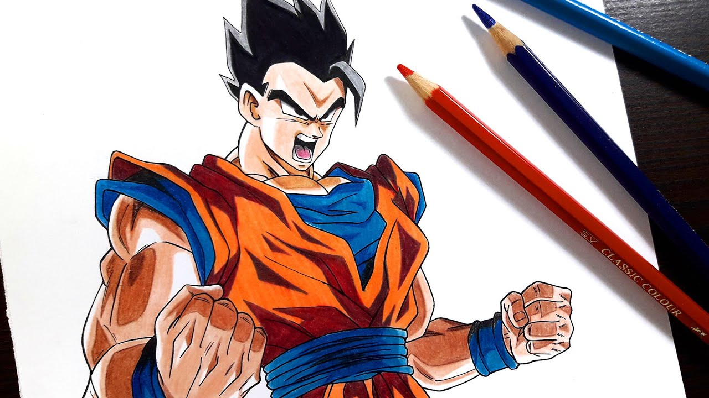

Por qué amo dibujar animes
El dibujo de animes es una de mis mayores pasiones. Me encanta la creatividad y la expresividad que puedo transmitir a través de mis dibujos. Cada personaje que dibujo tiene su propia historia y personalidad, y es emocionante darles vida en el papel.
Mis técnicas favoritas
Cuando dibujo animes, disfruto experimentar con diferentes técnicas y estilos. Me gusta trabajar tanto en blanco y negro como en color. Me encanta jugar con las sombras y los contrastes para resaltar los rasgos de los personajes y crear una atmósfera única en mis dibujos.
Dibujos inolvidables
A lo largo de los años, he creado muchos dibujos de animes que son especiales para mí. Cada uno de ellos me recuerda momentos y emociones específicas de mi vida. Uno de mis dibujos más queridos es [describe tu dibujo favorito].
